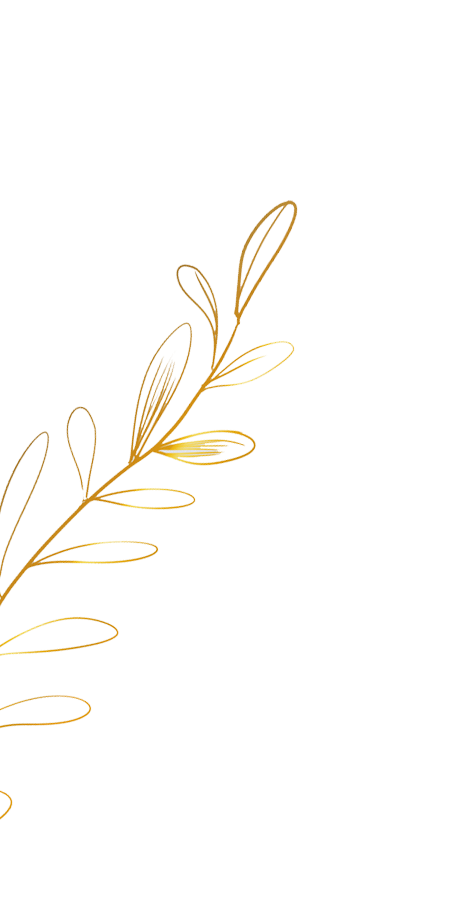
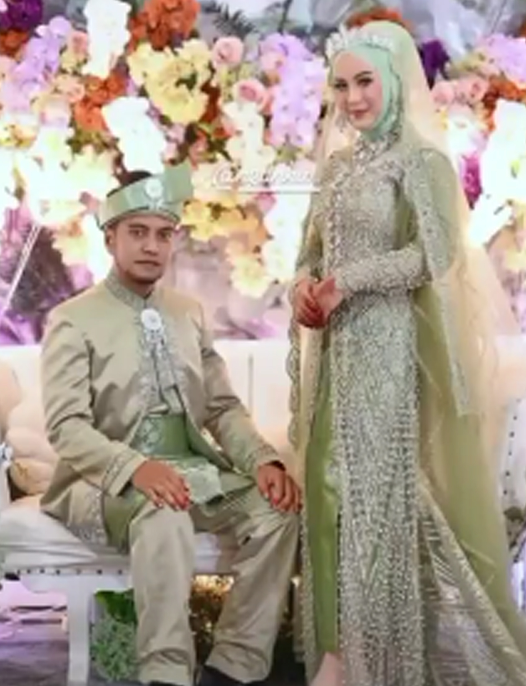

The Wedding Of
ferry & Rina
Minggu, 30 Januari 2022
"Dan di antara tanda-tanda kekuasaan-Nya ialah Dia menciptakan untukmu isteri-isteri dari jenismu sendiri, supaya kamu cenderung dan merasa tenteram kepadanya."
Ar-Rum: 21
Waktu & Tempat
Akad Nikah
08.00 - 10.00 WIB
Kediaman Mempelai Wanita
Resepsi
11.00 WIB - Selesai
Gedung Serbaguna Karimun